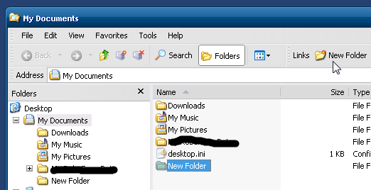

Hi, Ivo.
Think I can express myself better with pictures. See bellow, in Windos XP the navigation pane can not be hidden easily as in Seven, except by a hidden setting that I don't remember now. The default in XP is to show the key-locations in the navigation pane, as in Seven...

... but the "Folders" button can switch between this and the folder tree, allowing you to expand to current folder directly.

However, in Seven, the NavPane button just hides/shows the panel. Yes, you can expand the folder tree by clicking the right button on a blank spot on the panel, but it still has some drawbacks:
1 - One click to more, which could be summarized in a button.
2 - If the current folder is in a very deep level, you will have to look for it with the vertical scroll bar.
3 - It is not easy to find a new point blank to undo the action, since the folders were expanded.
4 - If you find the point blank and uncheck the action, this will not return to its initial state, ie, to key-locations.